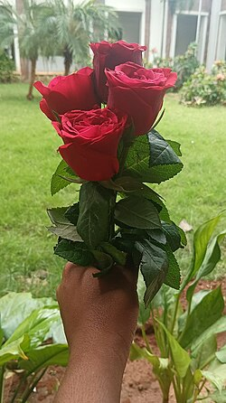

You've got flowers
Pick who's delivering them
Continue →
🔍
No match found

🌹
Receive my flowers →
Note 1 of 1
🌹
—
All your notes
Done →
🌸
🌸
🌸
🌸
🌸
Thank you for carrying yourself forward and leaning into the
Black Wharton class of 2026
. Here's to a lifetime of connection to follow. 🌹
🌹
Would you still like me to get you some roses for these when I see you? I'll be sure to remember.